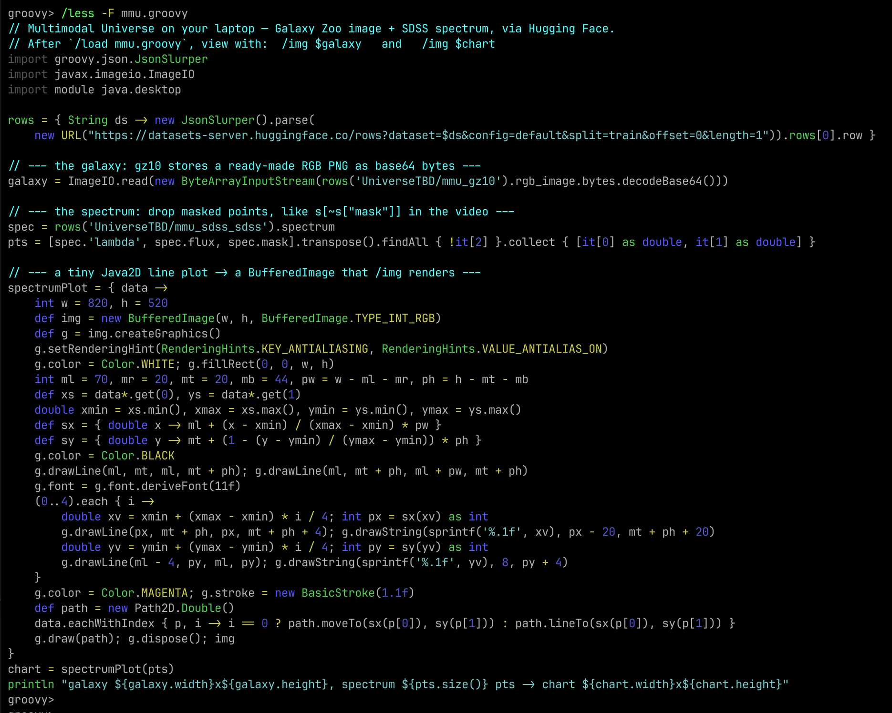
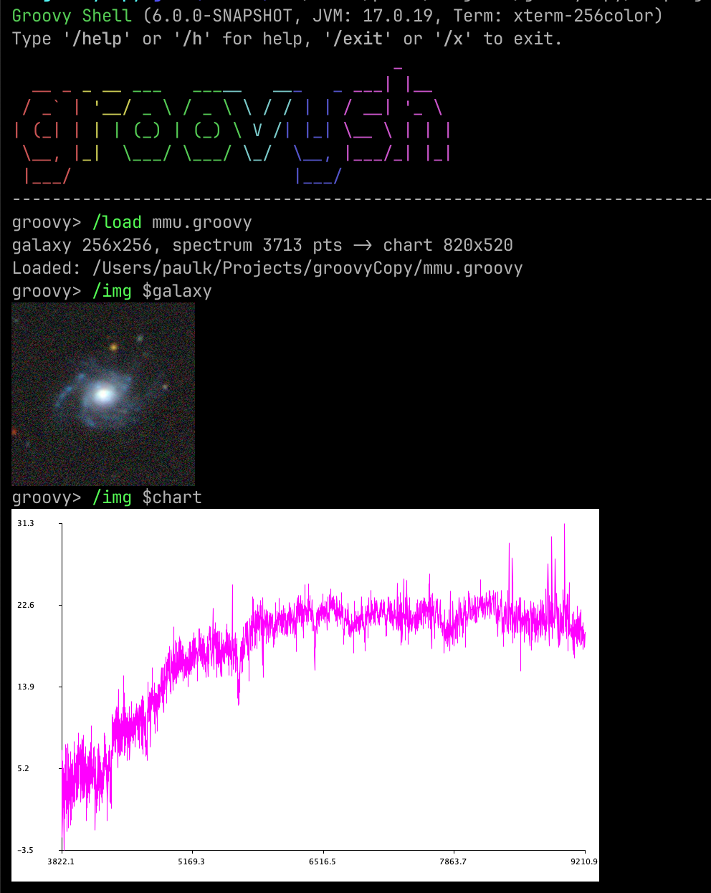

Exploring the Multimodal Universe with Groovy™

Published: 2026-07-01 11:00AM
A recent post on X by Georgia Channing (@cgeorgiaw) caught our eye:
Seems like no one’s noticed the 80TB of astrophysics data from 30+ sources that just dropped on @huggingface … and you only need ~4GB of RAM to load it. We’re talking over 80TB of galaxy imagery taken across the spectrum, spectra of galaxies and stars, time series of variable stars, and a whole zoo of assorted measurements and physical data. And all of it can now be wrangled on your laptop, thanks to Multimodal Universe’s just released cross-matching.
The accompanying video is a lovely little terminal session: open a couple of enormous astronomical
catalogs straight from Hugging Face, cross-match them, pull out one galaxy,
and draw the galaxy and its spectrum right there in the terminal.
That last part — rendering scientific images inline in a REPL — is something Groovy 6 groovysh can do too,
via its /img command, so let’s reproduce the demo.
Full credit to Georgia Channing for the original post, and to Mike Smith (@smith42mike) who led the cross-matching work that makes the Multimodal Universe accessible on a laptop.
What is the Multimodal Universe?
The Multimodal Universe is a large, community effort (presented at NeurIPS 2024) that gathers around 100TB of astronomical data from more than 30 surveys into a single, machine-learning-friendly collection: galaxy images across multiple wavelength bands, optical spectra of galaxies and stars, time series of variable stars, and assorted catalog measurements. It is published as a family of datasets on the Hugging Face Hub.
The magic trick behind "wrangle 80TB on a 4GB laptop" is cross-matching with LSDB on top of the HATS format: the catalogs are spatially partitioned (by position on the sky using HEALPix), so joining 800k objects from SDSS against 122M objects from Gaia only ever needs to hold a few partitions in memory at a time. You never download the whole thing.
We are going to focus on the visualization half of the demo, using two of the datasets:
-
UniverseTBD/mmu_gz10— galaxy imagery derived from the Galaxy10 DECaLS set, which pairs citizen-science Galaxy Zoo morphology labels with 256×256 colour cutouts from the DESI Legacy Imaging Surveys. Each row conveniently carries a ready-made RGB PNG. -
UniverseTBD/mmu_sdss_sdss— optical spectra from the Sloan Digital Sky Survey, i.e. flux measured across wavelengths from roughly 3800 to 9200 Ångströms, plus a per-pixelmaskmarking bad samples.
We don’t even need a Python environment or the datasets locally. Hugging Face exposes a dataset viewer REST API that streams rows as JSON straight out of the underlying Parquet — so we can grab a single galaxy with an ordinary HTTP call. Requesting one row looks like this:
https://datasets-server.huggingface.co/rows?dataset=UniverseTBD/mmu_gz10&config=default&split=train&offset=0&length=1
In that JSON, the galaxy image comes back as base64-encoded PNG bytes, and the spectrum comes back as
plain arrays of lambda (wavelength), flux, and mask values. Perfect for Groovy.
Rendering images in groovysh
Groovy’s interactive shell, groovysh, has been reworked on top of
JLine 3 and gains a set of /-prefixed commands. One of them is
/img, which displays an image inline using the terminal’s graphics protocol (Sixel, Kitty, or
iTerm2 — terminals like iTerm2, WezTerm, or
Kitty all qualify). On a terminal without graphics support it
prints a summary line, and you can add --gui to pop up a Swing window instead.
/img accepts a file path, an HTTP URL, or a shell variable holding a java.awt.image.BufferedImage
(among other things), which is exactly what we need: one command for the galaxy PNG and one for a
chart we build ourselves.
The script
Here is the complete mmu.groovy script. It reads one cross-matched-style row from each dataset,
decodes the galaxy PNG, filters the masked points out of the spectrum (mirroring the video’s
s = s[~s["mask"]]), and hand-draws the spectrum as a Java2D line plot returned as a
BufferedImage:
import groovy.json.JsonSlurper
import javax.imageio.ImageIO
import module java.desktop
rows = { String ds -> new JsonSlurper().parse(
new URL("https://datasets-server.huggingface.co/rows?dataset=$ds&config=default&split=train&offset=0&length=1")).rows[0].row }
// --- the galaxy: gz10 stores a ready-made RGB PNG as base64 bytes ---
galaxy = ImageIO.read(new ByteArrayInputStream(rows('UniverseTBD/mmu_gz10').rgb_image.bytes.decodeBase64()))
// --- the spectrum: drop masked points, like s[~s["mask"]] in the video ---
spec = rows('UniverseTBD/mmu_sdss_sdss').spectrum
pts = [spec.'lambda', spec.flux, spec.mask].transpose().findAll { !it[2] }.collect { [it[0] as double, it[1] as double] }
// --- a tiny Java2D line plot -> a BufferedImage that /img renders ---
spectrumPlot = { data ->
int w = 820, h = 520
def img = new BufferedImage(w, h, BufferedImage.TYPE_INT_RGB)
def g = img.createGraphics()
g.setRenderingHint(RenderingHints.KEY_ANTIALIASING, RenderingHints.VALUE_ANTIALIAS_ON)
g.color = Color.WHITE; g.fillRect(0, 0, w, h)
int ml = 70, mr = 20, mt = 20, mb = 44, pw = w - ml - mr, ph = h - mt - mb
def xs = data*.get(0), ys = data*.get(1)
double xmin = xs.min(), xmax = xs.max(), ymin = ys.min(), ymax = ys.max()
def sx = { double x -> ml + (x - xmin) / (xmax - xmin) * pw }
def sy = { double y -> mt + (1 - (y - ymin) / (ymax - ymin)) * ph }
g.color = Color.BLACK
g.drawLine(ml, mt, ml, mt + ph); g.drawLine(ml, mt + ph, ml + pw, mt + ph)
g.font = g.font.deriveFont(11f)
(0..4).each { i ->
double xv = xmin + (xmax - xmin) * i / 4; int px = sx(xv) as int
g.drawLine(px, mt + ph, px, mt + ph + 4); g.drawString(sprintf('%.1f', xv), px - 20, mt + ph + 20)
double yv = ymin + (ymax - ymin) * i / 4; int py = sy(yv) as int
g.drawLine(ml - 4, py, ml, py); g.drawString(sprintf('%.1f', yv), 8, py + 4)
}
g.color = Color.MAGENTA; g.stroke = new BasicStroke(1.1f)
def path = new Path2D.Double()
data.eachWithIndex { p, i -> i == 0 ? path.moveTo(sx(p[0]), sy(p[1])) : path.lineTo(sx(p[0]), sy(p[1])) }
g.draw(path); g.dispose(); img
}
chart = spectrumPlot(pts)
println "galaxy ${galaxy.width}x${galaxy.height}, spectrum ${pts.size()} pts -> chart ${chart.width}x${chart.height}"A few things worth pointing out:
-
The whole data-access layer is a one-line closure.
JsonSlurperparses the HTTP response, and Groovy’s GDK gives usdecodeBase64()on the PNG string for free. -
transpose()zips the three parallel arrays (lambda,flux,mask) together so we canfindAllthe unmasked samples in one readable expression. -
Note the
import module java.desktopon line 3. This is a JDK module import (JEP 494), supported in Groovy 6, that pulls in every package thejava.desktopmodule exports (java.awt,java.awt.geom,java.awt.image, and more) in a single line — handy for a script that reaches into a few AWT corners.
Running it
Start groovysh, load the script, and view each result with /img:
groovy> /load mmu.groovy
galaxy 256x256, spectrum 3713 pts -> chart 820x520
Loaded: mmu.groovy
groovy> /img $galaxy
groovy> /img $chartHere is the script itself, viewed through the shell’s built-in /less pager (which syntax-highlights
Groovy):

And here is the payoff — a galaxy and its spectrum, drawn directly in the terminal:

What are we looking at?
The top image is a single galaxy from the Galaxy Zoo / DECaLS set: a bright central bulge with fainter spiral structure around it, sitting in a field speckled with foreground stars and other faint sources (the little coloured dots). It is a true-colour composite assembled from the survey’s imaging bands.
The lower plot is that same class of object’s SDSS optical spectrum: flux on the vertical axis against wavelength (in Ångströms) on the horizontal axis, from about 3800Å on the left to 9200Å on the right. The characteristic shape — low and noisy in the blue, rising to a broad, fairly flat continuum toward the red — is the combined light of the galaxy’s stellar populations, with narrow spikes where emission lines and residual sky features poke through. We drew it in magenta to match the original demo; the thin black vertical hairs you can see are simply the plot connecting rapidly varying adjacent samples. We removed the flagged (`mask`ed) pixels first, so 3713 good samples remain out of the original ~3850.
The point isn’t the plot’s polish — it’s that a few lines of Groovy pulled a real galaxy and a real spectrum out of an 80TB, 30-survey collection, over plain HTTP, and painted them in a terminal, with no local data download and no heavyweight plotting dependency.
What we didn’t reproduce
The original video’s headline feat is the cross-match itself — joining gz10 (imagery) against
sdss (spectra), or SDSS against Gaia, using LSDB’s HATS-partitioned catalogs. That machinery is
Python-native and has no direct JVM equivalent, so here we simply grabbed a representative row from
each dataset rather than computing the spatial join. Everything downstream of the match — decoding
the image, cleaning the spectrum, and rendering both — is pure Groovy and the JDK.
More information
-
The original post: Georgia Channing on X
-
The Multimodal Universe project and its GitHub repository
-
Datasets on Hugging Face: mmu_gz10 and mmu_sdss_sdss
Conclusion
We used a viral astronomy demo as an excuse to show off groovysh’s `/img command, JDK module
imports in Groovy 6, and just how little code it takes to reach into a massive scientific dataset and
visualize it. Go discover some galaxies!